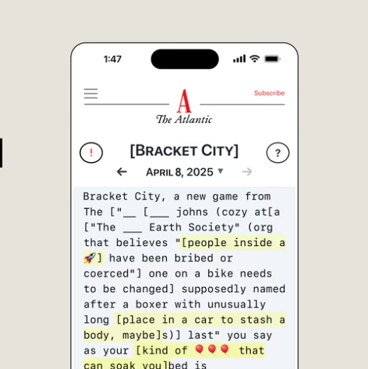
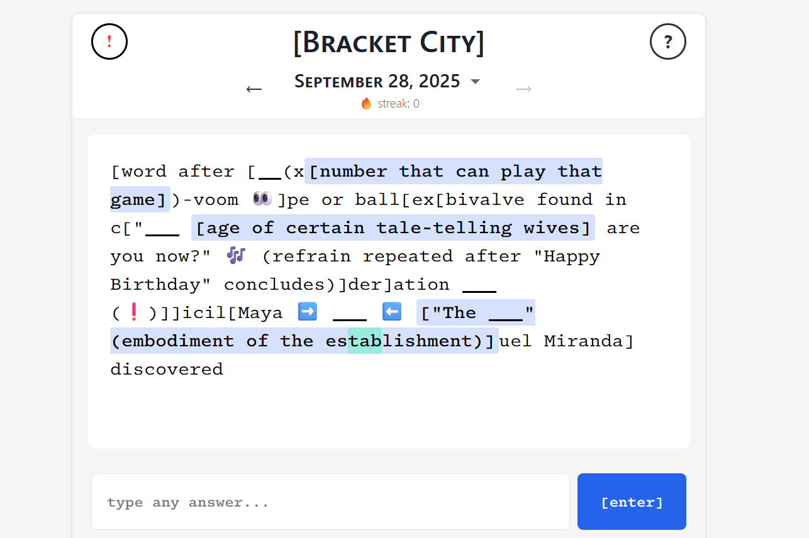
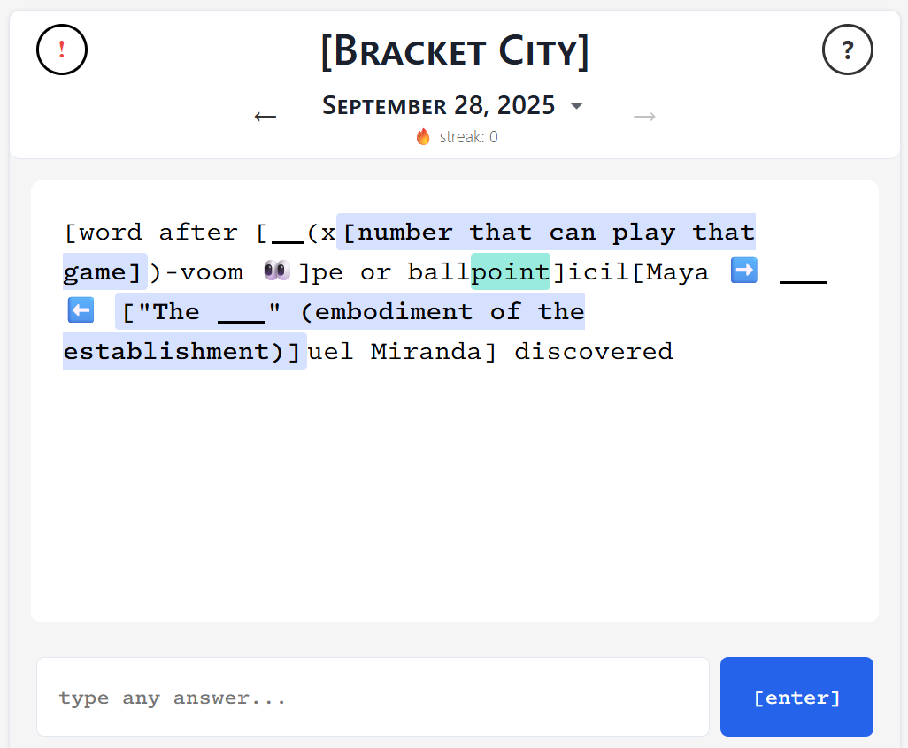
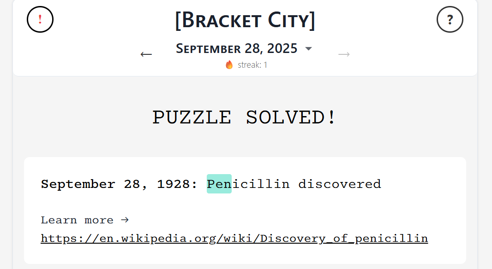

I’ve tested Chat-GPT on other word puzzles, how does it do on this less well known clue-based word game?
What is the game?
Bracket City is a nested clue word puzzle game made by The Atlantic. You start with short phrases that act as clues to a word. Then that word helps you make sense of ‘outer’ phrases, which then hint at other clues. Essentially, you work your way out (hence the ‘nested’ part) until you solve the whole puzzle. Shout out Came

My Current Game - I need help ğŸ˜

Can Chat-GPT5 Help?
First, I am going to ask Chat-GPT about one of the simpler clues. I first informed the LLM of what game I was playing. Then, as the prompt, I just typed in:
age of certain tale-telling wives.
Response:
Step 1. Identify the reference:
“tale-telling wives†→ almost certainly refers to The Wife of Bath from The Canterbury Tales by Geoffrey Chaucer. She is one of the most famous “tale-telling wives.â€
Step 2. Look for the wordplay:
Crossword-style clues usually have:
A definition (here: “ageâ€), and a wordplay part (here: “of certain tale-telling wivesâ€). The “wives†bit suggests plural. The “age†might be something like “ERA.â€
Step 3. Put it together
“Age†= ERA
“Certain tale-telling wives†= wives from The Canterbury Tales → “WIFE OF BATH†(but plural doesn’t quite fit).
But in wordplay terms:
“Bath†is a city.
“Age†can clue ERA.
So “tale-telling wives†(Wife of Bath → Bath → ERA) → answer is ERA.
✅ So the answer is likely ERA = “age.†The clue works because “tale-telling wives†hints at the Wife of Bath, whose home is Bath → “BATH†→ “AGE†= “ERA.â€
So that’s not right 😠nor does it really make sense…
After thinking some more, I got the right answer. old
After a few more clues solved, I got stuck here:

Chat-GPT prompt:
embodiment of the establishment
Response:
Nice clue — here are the best short answers and why they fit:
status quo — (my top pick) literally means the existing state of affairs; calling someone the “embodiment of the establishment†often points to a person or thing that represents the status quo.
establishment — a more literal, single-word option: the institution or ruling class itself; can be used figuratively to mean an embodiment.
pillar of society — a common phrase for a respected person who embodies establishment values.
establishmentarian — a rarer, longer noun meaning someone who supports the establishment (works as a direct “embodiment†answer if length isn’t constrained).
Again, these answers don’t really make sense…
I ended up using two hints, but I solved it! (not with the help of Chat-GPT though 😕)

My Verdict
Chat-GPT5 is … (drum-roll please) terrible at Bracket City!
After inputting two clues into the LLM, it unfortunately was not able to get either one. For the first clue about tale-telling wives, Chat-GPT5 dissected the clue a bit too far in my opinion, taking into account hyper-specific references that weren’t at all related to the eventual answer. Additionally, for the second clue, it also did not give good options. I wanted to point out one of the bullet points being a word that was literally in clue, meaning that it couldn’t be the answer.
I think in general, Chat-GPT5 gives Bracket City answers that are incredibly overcomplicated. Perhaps it overanalyzes the clues, overlooking the general simplicity and accessibility of the game.